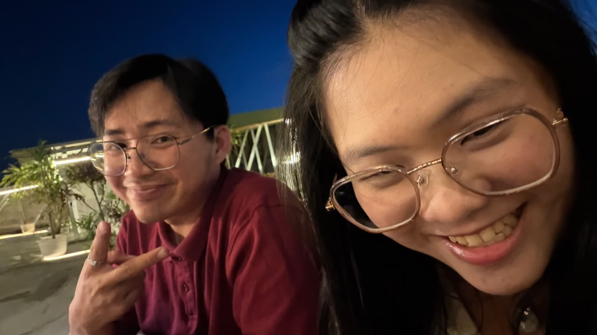
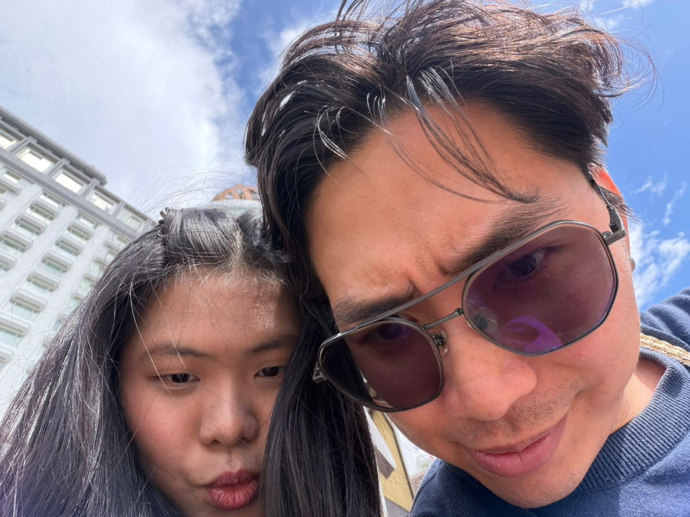
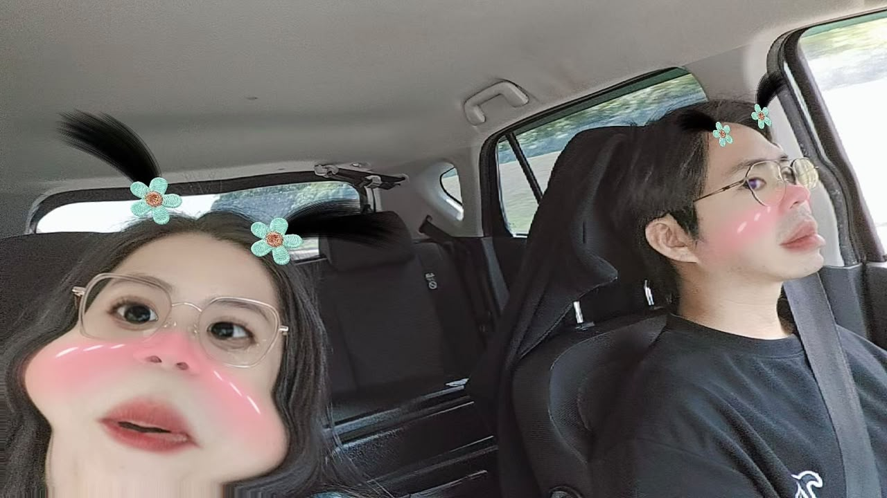
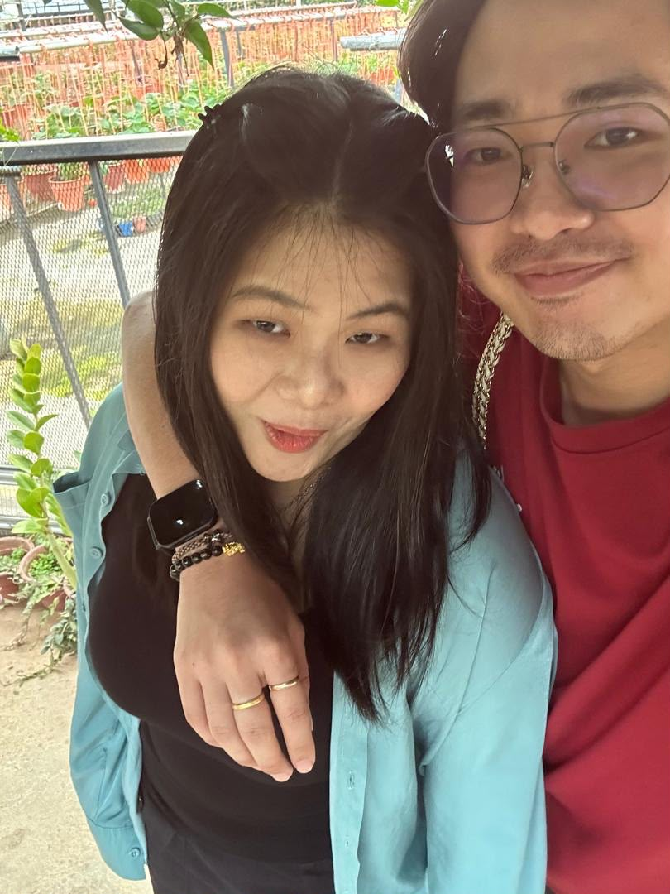

点击打开信封
˚ʚ♡ɞ˚至亲爱的江宝贝，
很多话想对你说。平时也不好意思说给你听，所以就想在这里跟你说说心里话。(˶>⩊<˶)
谢谢你出现在我的生活中，让我很开心，也让我感受到被爱和被关心的温暖。💖
谢谢宝贝对我的包容和理解，虽然我有时候会有点小脾气，但你总是耐心地倾听和安慰我。
虽然我有时自己知道自己不对，但还是会有点小任性，但你总是包容我。我也是知道自己是个爱哭包，
但是你每次都很耐心也没有责怪我嫌烦。对不起和谢谢你💞
正在加载照片…
还有我很爱赌气，有时候会因为一些小事就赌气不理你。宝贝问发生什么事了，我就赌气不跟你说话。 但是宝贝都耐心的跟我说直到我告诉宝贝。我知道这么是不对的，我在努力改变，多表达。 这么宝贝才知道是因为 什么事情，不然宝贝挺无助又无辜的。不知道发生什么事情，也解决不了问题。但其实我心里还是很在乎你的。💔 其实如果我有什么做的不好的让宝贝觉得不开心的地方，要告诉我哦。我真的很抱歉。希望宝贝能原谅我，给我机会改正。🙏 每次问宝贝我有什么做的不是很好的宝贝都说没有。就好像我之前告诉宝贝希望宝贝怎么样做的，我也看 得出宝贝有在慢慢改的。 但是我想说的其实我更希望宝贝能做回自己最真实的样子。

其实宝贝真的很棒很厉害，我很很欣赏你。希望你能一直保持自信和勇敢，去追求自己的梦想。✨ 我会一直在你身边支持你，陪伴你度过每一个难关和挑战。无论你遇到什么困难，我都会在你身边，给你鼓励和支持。💪 但是宝贝要记得不要给自己太大压力，适当的休息和放松也是很重要的。目标也可以不需要一下就放得太高，慢慢来目标有在前进就已经很厉害了。
宝贝如果有不开心的事情或者烦恼的事情，也可以跟我说哦。我会尽力帮你分担和解决问题。💌 可能宝贝会觉得可能帮不上忙，但是我能倾听宝贝的心声，给宝贝一些建议和支持。希望宝贝能感受到我的关心 和爱意， 也会感觉比较舒服。💖

我希望我们能一直在一起，分享彼此的喜怒哀乐，一起成长和进步。无论未来会遇到什么样 的挑战和困难，我都会陪伴你走过每一个阶段。💑 希望我的宝贝能开开心心， 健健康康，事事顺利， 发大财。希望你能一直保持微笑和快乐的心情，去迎接每一个美好的日子。是发自内心的那种哦~🌈

宝贝对我是真的好呀。很容易都发现了我的小情绪。我稍微有点不开心或者在想事情的时候总会被你发现。 会给我温暖和支持，让我感受到被爱和被珍惜的幸福。💞 还有宝贝常带我去吃好吃的大餐 🥰吃的食物没有壳没有皮的。宝贝也带我到处走走去玩， 也有了很多美好的回忆。以后我们一定还有越来越多 美好的回忆。虽然我们目前没办法可以天天见面，但我相信我们都熬得过去的。 谢谢宝贝让我觉得我值得拥有这些。 我想对你说，我真的很爱你。💖 你是我生命中最重要的人，我愿意为你付出一切，守护你，陪伴你，直到永远。💍
希望你在收到这封信的时候，能感受到我满满的心意。💌 爱你呀宝贝 ♡𝑰 𝒍𝒐𝒗𝒆 𝒚𝒐𝒖♡

*.❤︎₊ ⊹